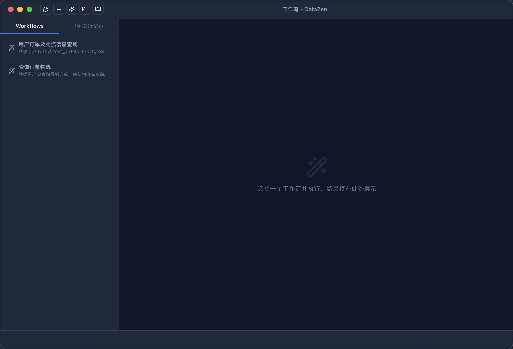
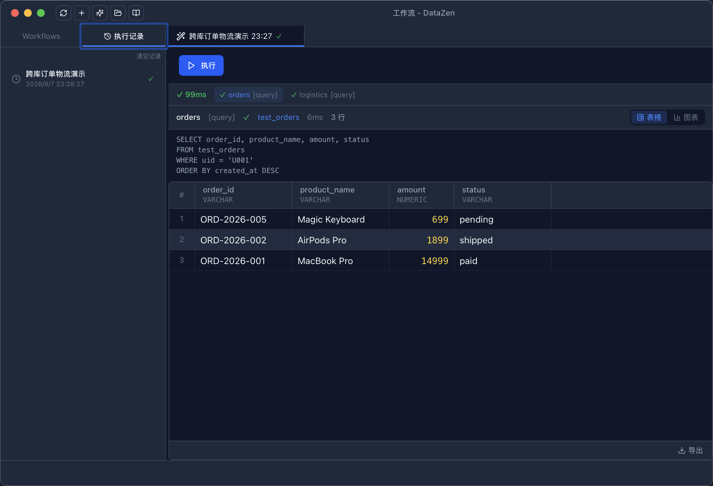

YAML 定义
一个文件，一套流程
Workflow 用 YAML 描述：变量、步骤、输出。步骤之间通过 {{...}} 模板传递数据，查询结果可以直接喂给 AI，AI 结论再驱动下一步。
- 步骤类型：
query/ai/condition/foreach - 变量：string / number / connection，支持默认值与必填校验
- 模板语法：单值、行集、整表 JSON 均可引用
- 错误策略：abort / skip / fallback，超时可控

跨库编排
一个流程，连多个库
每个步骤可以绑定不同的连接与数据库。例如：从 PostgreSQL 订单库查出订单，再到 MySQL 物流库补物流信息，最后让 AI 汇总成报告。
steps:
- type: query
id: get_orders
connection: "{{pg_conn}}"
sql: |
SELECT order_id, amount FROM test_orders
WHERE uid = '{{uid}}'
- type: condition
id: check_orders
if: "steps.get_orders.rows_count > 0"
then_steps:
- type: query
id: get_logistics
connection: "{{mysql_conn}}"
sql: |
SELECT carrier, tracking_no, status
FROM test_logistics
WHERE order_id IN ({{steps.get_orders.rows.*.order_id}})
output:
format: markdown
template: |
## 用户 {{uid}} 的订单物流
{{steps.get_orders.result}}
{{steps.get_logistics.result}}
四种运行方式
在哪都能跑
- 连接窗口 AI 侧栏：选中工作流、填变量、看结果
- 独立 Workflow 窗口：标签页管理多个流程，全屏专注
- MCP 调用：
list_workflows/run_workflow暴露给外部 AI - AI 生成：让 AI 根据需求直接生成一份可执行的工作流
